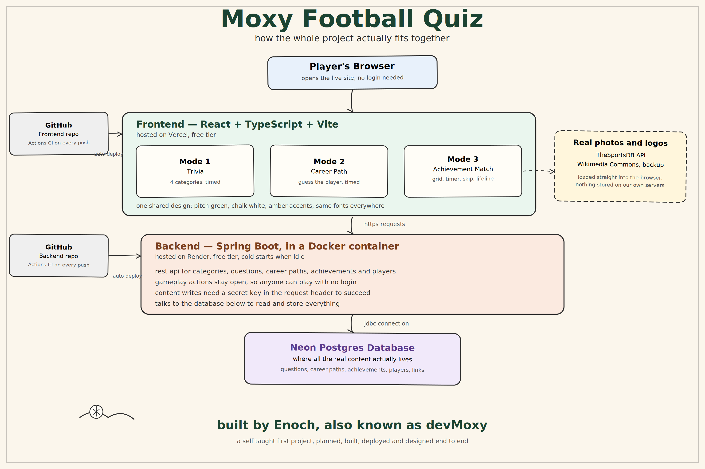

2026
Moxy Football Quiz
A three mode football trivia platform, built and deployed end to end.
Java 21
Spring Boot
React
TypeScript
PostgreSQL
Docker
18REST endpoints
7table schema
500+curated questions
3game modes
- Diagnosed a 27x production duplication bug after noticing live row counts divided evenly by 27, and traced it to a startup seeder that was not idempotent.
- Found two shuffled lists that were still positionally correlated because they were built in lockstep, then fixed it behind a 200 trial regression test.
- Designed the grid mode on a stateless backend, tracking triggering achievements separately from turn index to close an unwinnable state edge case.
- Cut load on an image heavy grid with thumbnail rewriting and lazy loading, and built a keyboard navigable ARIA combobox.
